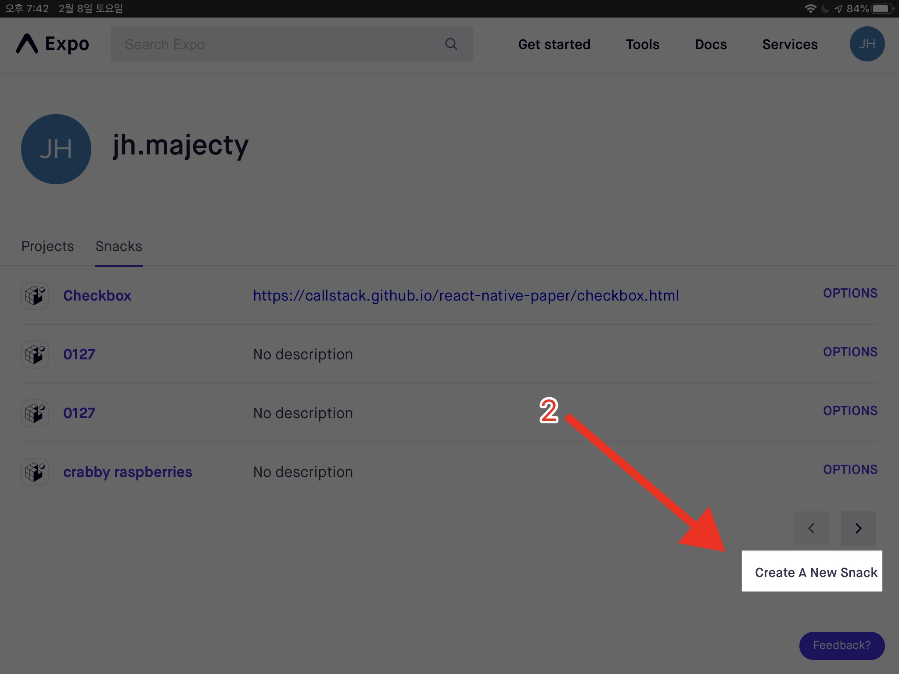
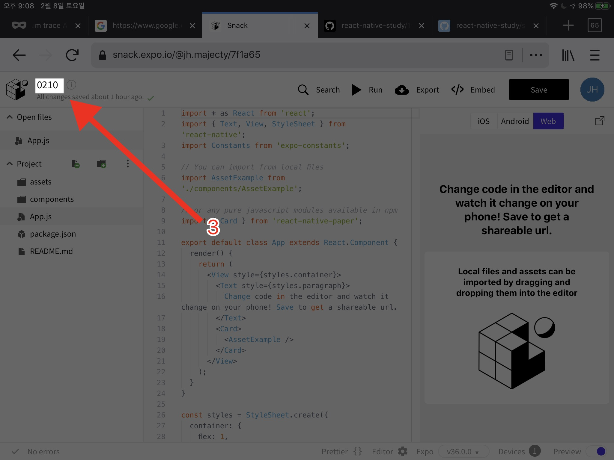

리액프 프로그래밍 스터디
React Native와 JavaScript를 도구로 프로그래밍의 기초를 가르치는 수업자료다.
첫째 날
메모리와 변수의 개념을 익힌다.
둘째 날
간단한 React Native 앱을 만든다. 다른 라이브러리를 사용하는 법을 배운다.
셋째 날
연산자와 if문에 대해 배운다.
넷째 날
리스트 UI를 다룬다.
첫번째 날 2020-01-20
- 앞으로 무엇을 할 지 공유
- repl.it과 expo snack 써보기
- JavaScript가 다른 언어의 비교
- 변수와 코드의 개념
목표
JavaScript와 React Native를 사용해서 프로그래밍 컴퓨팅적 사고를 배운다. 컴퓨팅적 사고란 풀고자 하는 문제를 컴퓨터가 해결할 수 있는 문제로 재해석하는 사고능력을 말한다.
컴퓨팅적 사고1를 배우기 위한 도구로 JavaScript와 React Native를 도구로 사용할 것이다. 사고 능력은 개념을 이해하고, 실천함으로써 익힐 수 있다. 배운 것을 직접 실천하기 위한 도구로 JavaScript는 큰 장점이 있다. 언어의 기능이 간단하여, 도구를 배우기 위해 너무 큰 시간을 쓰지 않아도 되고, 웹브라우저나 스마트폰에서 눈에 보이는 결과를 바로 내기게 적합한 도구다.
카네기 멜론 대학 컴퓨터 학과 학과장이자 마이크로소프트 리서치의 부사장인 지넷 윙의 컴퓨팅적 사고에 대한 글 https://www.cs.cmu.edu/afs/cs/usr/wing/www/ct-korean.pdf
앞으로의 계획
JavaScript 언어를 배우면서 컴퓨팅적 사고를 연습한다. 공부한 내용을 실습해보기 위해서 React Native를 사용해서 간단한 앱의 기능들을 만들어볼 것이다. JavaScript 공부와 React Native 실습을 번갈아가면서 진행한다. JavaScript 공부는 한 글자 한 글자의 의미를 파악하도록할 것이며 React Native 실습은 모르는 부분이 많이 나오더라도 어떻게든 눈에 보이는 것을 만드는 데 집중한다.
사용할 도구들
복잡한 개발환경을 사용하면, 개발환경 설정에 많은 시간을 쏟아내고 지치기 마련이기 때문에, 쉽게 접근 가능한 웹 기반 툴을 사용한다.
- repl.it2
웹페이지에서 JavaScript 코드를 바로 실행해볼 수 있는 환경이다. 이 책에서 다루는 코드는 repl.it에서 실행 가능하다. 실행가능한 코드 덩어리를 repl이라고 부른다. 공짜 계정으로는 공개된 repl을 만들 수 있다. 유료 계정을 사용하면 repl을 다른사람들에게 안보이게 숨길 수 있다.
- expo snack 3
웹페이지에서 React Native를 사용하는 앱을 개발할 수 있는 환경이다. 작성한 코드를 웹에서 바로 확인할 수 있고, 자신의 핸드폰에 expo 앱을 설치해서 핸드폰에서 바로 확인할 수 있다. 혼자서 사용하는 건 무료고, 빌드 속도를 더 빠르게 하거나 팀 단위로 사용하려면 돈을 내야 한다.
repl.it과 expo snack 써보기
repl.it 사용해보기
repl.it에 가입한 뒤 간단한 repl을 하나 만들어보자. 맨 처음 가입하면 다음과 같은 페이지를 볼 수 있다.

오른쪽 위의 "+ new repl" 버튼을 눌러서 새로운 repl을 만들자.

언어는 JavaScript를 선택하고, repl의 이름을 간단하게 지어주자.

replit의 페이지는 크게 세 영역으로 나뉜다. 맨 왼쪽은 파일들을 볼 수 있는 영역이다. 가운데에서 왼쪽은 코드를 쓰는 영역. 맨 오른쪽은 실행 결과를 볼 수 있는 영역이다.
Hello world in repl.it
다음 코드를 repl.it에 붙여넣고 실행시키자. 위의 "Run" 버튼을 누르면 코드가 실행된다. 단축키로 Ctrl-Enter혹은 Cmd-Enter를 입력해도 실행된다.
const hiMsg = "Hello World";
console.log(hiMsg);
코드를 실행하면 오른쪽 창에 "Hello World"라는 메시지가 출력된다.
Expo Snack 써보기
Expo를 사용하면 JavaScript로 작성한 앱을 핸드폰에서 바로 실행해볼 수 있다. Expo Snack은 Expo가 제공해주는 웹용 개발 도구다. 첫 프로젝트를 생성해서 핸드폰에서 실행해보자.
먼저 snack.expo.io에 접속하자. 접속하면 다음 화면을 볼 수 있다.

이미 간단한 예시 프로그램이 준비되어있다. UI는 repl.it과 비슷하다. 맨 왼쪽은 파일들을 볼 수 있는 영역, 가운데는 코드는 쓰는 영역, 맨 오른쪽은 결과를 볼 수 있는 영역이다.
Run 버튼을 누르면 QR 코드가 생성된다. 아이폰이라면, 스마트폰의 카메라 앱으로 해당 QR 코드를 인식하자. 인식되면 자동으로 버튼이 뜨는데 해당 버튼을 눌러서 expo 앱으로 이동하자.
성공했다면, 핸드폰에서 예시 이미지와 텍스트를 확인할 수 있다.

메모리와 코드
컴퓨터에서 가장 중요한 부품은 CPU와 메모리다. 컴퓨터의 모든 기능은 간단하게 말해서, "CPU는 메모리에서 값을 읽어서 정해진 연산을 한 뒤 다시 메모리에 값을 쓴다." 로 요약할 수 있다.
프로그래밍이란 무엇을 어떻게 메모리에 저장될 지를 결정하고, 해당 값을 변경하는 일련의 명령어들을 작성하는 작업이다.
우리가 작성한 코드는 컴퓨터가 실행할 수 있는 형식으로 변형되며, 이 변형과정을 컴파일이라고 하고, 컴파일을 하는 도구를 컴파일러라고 부른다.
우리가 사용할 JavaScript는 쉽게 쓰기 위해서 컴파일과 실행의 사이가 모호하게 설계한 언어다. 별도의 컴파일러가 필요하지 않으며, JavaScript 소스 코드를 실행시켜주는 프로그램이 존재하며 이를 JavaScript 인터프리터 혹은 JavaScript 런타임이라고 부른다.
값과 변수
한 문제를 풀기 위해선 문제와 연관된 값을 정리해서 그 값들을 코드로 표현하는 과정이 필요하다. 예를 들어 할일 관리 앱을 만든다면, 다음 정보들을 다루어야 한다. "무엇을 할 것인가"를 나타내는 글자들. 할일의 우선순위, 해당 할 일을 했는지 안했는지 여부. 프로그래머는 메모리에 이 정보들을 어떻게 담을 지 설계하고, 프로그래밍 언어를 사용해서 컴퓨터가 해당 정보들을 다루는 방법을 정의한다.
변수(variable)
메모리는 앞서 설명했듯이, 한 줄로 이어져있는 데이터 저장공간이라 이해할 수 있다. 우리는 프로그래밍 언어를 사용해서 메모리의 특정 공간에 값을 쓰고 읽을 수 있어야 한다.
변수 문법이 바로 프로그래머가 메모리를 사용하는 방법이다.1 변수는 일종의 이름 붙이기라 이해할 수 있다. 변수를 선언(declaration)하면 프로그램이 실행될 때 변수를 위한 메모리 공간을 준비한다. 변수에 값을 대입(assignment)하면, 변수를 위한 메모리 공간에 해당 값을 적는다. 변수의 값을 읽으면, 변수를 위한 메모리 공간에서 값을 읽어온다.
메모리는 매우 중요한 자원으로, 효율적으로 메모리를 쓰는 방법은 매우 복잡하다. 우리가 사용하는 JavaScript언어는 내부적으로 매우 복잡한 방법을 통해 메모리를 사용한다. 따라서 여기서 설명하는 것과 실제 메모리가 사용되는 방식은 보통 다르다. 하지만 메모리 관리를 이해하는 것이 이 책의 범위는 아니며, 더 자세히 알고 싶은 사람은 "가비지 컬렉터", "버츄얼 메모리"를 따로 공부하길 바란다.
변수의 선언
JavaScript의 변수관련 문법을 살펴보자. 가장 먼저 살펴볼 문법은 변수의 선언이다.
let apple;
변수를 선언하는 이 한 줄의 코드를 변수를 선언하는 statement라고 부른다. 변수 선언 statement는 키워드 "let"과 변수 이름의 두 요소로 구성된다. 변수 이름은 알파벳 대문자와 소문자, 그리고 숫자 등을 자유롭게 사용하여2 원하는 이름을 만들 수 있다.
정확히 말하자면, JavaScript의 변수이름은 JavaScript의 식별자 규칙에 따른다. 정확한 식별자 규칙은 이 링크에서 확인하자.
변수의 대입
아래는 JavaScript 언어에서 변수에 값을 대입하는 문법이다.
apple = 3;
변수의 이름을 먼저 쓰고 = 기호를 쓰고 뒤에 값을 쓴다. "값"의 위치에는 메모리에 씌여질 수 있는 다양한 것들이 올 수 있다. 값에 대한 자세한 내용은 뒤에 다시 다룬다.
변수의 값 읽기
변수의 값을 읽어서 다른 변수에 대입하거나, 다른 값과 연산을 할 수 있다. 지금은 아직 마법과도 같은 "console.log"를 사용해서 값을 출력해보자.
console.log(apple);
위 코드가 어떻게 동작하는지 지금은 몰라도 괜찮다. console.log()의 () 사이에 변수나 다른 값을 집어넣으면 값의 내용이 화면에 출력된다.
const, let, var
변수를 선언할 때 let 대신 var나 const를 사용할 수 있다. 자세한 내용은 부록 var-let-const에 정리했다.
값
변수는 프로그래밍 언어에서 메모리를 다루는 방법이었다. 메모리는 많은 수의 0과 1을 담을 수 있는 그릇이다. 이 그릇에 담기는 내용이 값이다. 따라서 모든 값은 연속된 0과 1로 표현된다.
0과 1을 직접 다루기 어렵기 때문에 프로그래밍 언어는 사람이 쓰기 편하게 변수의 타입을 도입했다. 지금 알아야할 타입은 JavaScript는 Boolean, Number, String의 세가지다. 프로그래머가 true/false의 진리값, 숫자, 문자열을 입력하면 0과 1로 변환되어 메모리에 저장된다.
Boolean
let watermelon = true;
let tangerine = false;
Boolean 타입은 "참" 또는 "거짓"을 표현하기 위해 사용하는 값의 타입이다.
참을 표현하기 위해서 true 키워드를, 거짓을 표현하기 위해서 false 키워드를 사용한다.
Number
let tomato = 3;
let berry = 23.3
Number 타입은 숫자를 표현하기 위해 사용하는 값의 타입이다. JavaScript는 물론이고 대부분의 프로그래밍 언어는 제한된 영역의 숫자만 표현할 수 있다. JavaScript 숫자는 -9007199254740992 ~ 9007199254740992 까지의 정수는 완벽하게 표현할 수 있으며, 그보다 크거나 작은 값들은 메모리 사용량을 절약하기 위해서 정확하지 않게 표현된다.
실수는 정수보다 더 표현하기 까다롭다. 실수는 실수 하나와 실수 하나 사이에 무수히 많은 실수가 있기 때문에 컴퓨터의 메모리로 실수를 정확히 표현할 수 없다. 따라서 컴퓨터에서 다루는 실수는 진짜 실수가 아니다. 따라서 계산 결과가 원하는 결과와 다르게 나올 수 있다.
String
let strawberry = "안녕하세요"
string 타입은 글자들을 저장하는 타입이다. 위 코드를 작성하면 "안녕하세요"가 0과 1로 변환되어 메모리에 저장된다. 전자책의 내용, 우리가 Facebook앱에서 보는 수많은 글자들이 전부 string타입을 사용해 표현된다.
두번째 날 2020-01-27
목표:
- 리액트 네이티브 앱 만들기
- 과정에서 변수가 어떻게 쓰이는지 확인하기
오늘의 목표는 리액트 네이티브 앱을 만들고, 과정에서 변수가 어떻게 쓰이는지 확인하는 것이다. 프로그래밍을 하다보면 정확히 어떻게 동작하는지 잘 모르더라도 써야할 때가 온다. 중요한 능력 중 하나가 필요한 것을 필요한 만큼만 공부하는 것이다. 실습을 통해서 모르는 주변 환경 속에서 내가 아는 것을 바탕으로 무엇을 바꿀 수 있는지 배우자.
expo snack 빈 프로젝트 시작하기
프로젝트 생성
snack을 처음 키면 예시 프로젝트를 보여준다. 이 창에서 나가 새로운 프로젝트를 만들자.
 https://snack.expo.io에 처음 들어가면, 예시 프로젝트 창이 뜬다.
여기서 오른쪽 위 자신 계정의 아이콘(1번)을 눌러서 메뉴를 띄운 뒤 "View snakcs" 버튼(2번)을 누르자.
https://snack.expo.io에 처음 들어가면, 예시 프로젝트 창이 뜬다.
여기서 오른쪽 위 자신 계정의 아이콘(1번)을 눌러서 메뉴를 띄운 뒤 "View snakcs" 버튼(2번)을 누르자.
Snacks 자신이 만든 프로젝트의 목록을 보는 페이지다. 여기서 새로운 프로젝트를 만들자. 화면의 가운데에 "Create A New Snack" 버튼(3번)을 눌러서 새로운 스낵을 만들자.
프로젝트 파일들
프로젝트들 만들면 기본 파일들이 생성된다. 간략하게 생성된 파일들이 하는 일을 알아보자.

README.md 파일
많은 프로젝트들이 프로젝트를 설명하기 위해서 README.md 파일을 사용한다. 프로젝트의 목적, 상태, 사용 법등을 적는 파일이다.
package.json 파일
JavaScript를 사용해서 프로젝트를 만들 때 많은 경우 사용하는 파일이다. 프로젝트의 이름, 설명, 사용하는 라이브러리(다른 사람이 만든, 재사용할 수 있는 코드) 내용들이 적힌다.
App.js 파일
React Native 프로젝트의 시작 파일이다. 또한 화면을 그리는 파일이다. 화면을 구성하는 코드와, 화면의 보이는 모습을 설정하는 코드로 나뉘어있다.
화면을 구성하는 코드
export default class App extends React.Component {
render() {
return (
<View style={styles.container}>
<Text style={styles.paragraph}>
Change code in the editor and watch it change on your phone! Save to get a shareable url.
</Text>
<Card>
<AssetExample />
</Card>
</View>
);
}
}
위 코드가 화면을 구성하는 코드다. View 안에 Text와 Card가 있다. Text 안에는 글자가 써져있다.
보이는 모습을 설정하는 코드
const styles = StyleSheet.create({
container: {
flex: 1,
justifyContent: 'center',
paddingTop: Constants.statusBarHeight,
backgroundColor: '#ecf0f1',
padding: 8,
},
paragraph: {
margin: 24,
fontSize: 18,
fontWeight: 'bold',
textAlign: 'center',
},
});
위 코드가 보이는 모습을 설정하는 코드다. 여백(padding, margin)과 색(backgroundColor). 폰트 사이즈 등을 설정한다.
assets 폴더
프로젝트에서 소스코드가 아닌 파일들을 별도로 관리한다. 이 프로젝트에서는 assets 폴더 안에 관리한다. assets 폴더 안에는 이미지 파일이 하나 들어있다.
components
프로그래밍에서 중요한 이슈가 코드를 어떻게 나눠서 관리하는지다. 완성도 있는 프로젝트는 매우 많은 코드가 필요해서 한 사람이 모든 코드를 이해할 수 없다. 따라서 코드를 잘 나누어서 수정할 때 일부분의 코드만 수정할 수 있어야 한다. React Native는 Component라는 개념을 사용해서 코드를 나눈다. 컴포넌트는 UI를 구성하는 한 단위다.
components/AssetExample.js
예시로 들어있는 컴포넌트다. App.js와 비슷하게 화면을 구성하는 코드와 꾸미는 코드가 나누어져 있다.
새로운 컴포넌트 추가하기
Switches.js 파일 만들기
components 디렉토리에 "Switches.js" 라는 이름의 파일을 하나 만들자. 아래 코드를 복사해서 붙여 넣거나, 직접 타이핑하자.
// 큰 틀은 AssetExample.js와 똑같다.
import * as React from 'react';
import { Text, View, StyleSheet, Image } from 'react-native';
// class 키워드 뒤에 Switches 라는 이름을 사용했다.
export default class Switches extends React.Component {
render() {
return (
<View style={styles.container}>
<Text style={styles.paragraph}>
Switches
</Text>
</View>
);
}
}
const styles = StyleSheet.create({
container: {
alignItems: 'center',
justifyContent: 'center',
padding: 24,
},
paragraph: {
margin: 24,
marginTop: 0,
fontSize: 14,
fontWeight: 'bold',
textAlign: 'center',
}
});
App.js에서 Switches 컴포넌트 사용하기
App.js 파일을 열어서 아래 코드처럼 수정하자.
import * as React from 'react';
import { Text, View, StyleSheet } from 'react-native';
import Constants from 'expo-constants';
import AssetExample from './components/AssetExample';
// 이 아랫줄이 새로 추가되었다. 현재 디렉토리와 같은 위치에 있는
// components 디렉토리에서 Switches 파일의 코드를 불러온다는 의미이다.
import Switches from './components/Switches';
import { Card } from 'react-native-paper';
export default class App extends React.Component {
render() {
return (
<View style={styles.container}>
{/* 아래 줄을 추가하면 화면에 Switches가 추가된다. */}
<Switches />
<Text style={styles.paragraph}>
Change code in the editor and watch it change on your phone! Save to get a shareable url.
</Text>
<Card>
<AssetExample />
</Card>
</View>
);
}
}
const styles = StyleSheet.create({
container: {
flex: 1,
justifyContent: 'center',
paddingTop: Constants.statusBarHeight,
backgroundColor: '#ecf0f1',
padding: 8,
},
paragraph: {
margin: 24,
fontSize: 18,
fontWeight: 'bold',
textAlign: 'center',
},
});
여기까지 따라했다면 아래 그림처럼 결과 화면에 "Switch" 텍스트가 출력된다.
스위치 추가하기
스위키 기능을 넣기 위해서 react native paper 라이브러리의 스위치를 사용할 것이다. 스위치는 옵션의 켜짐과 꺼짐을 표현하고 수정할 수 있는 UI 컴포넌트다. Switch 컴포넌트의 사용법을 이 링크를 읽고 알아보자.
아래는 위 링크에 설명되어 있는 사용하는 예시코드다 천천히 살표보자.
import * as React from 'react';
import { Switch } from 'react-native-paper';
export default class MyComponent extends React.Component {
// state에 isSwitchOn 필드를 선언했다.
// 기본 값으로 false를 사용한다.
state = {
isSwitchOn: false,
};
render() {
// 화면을 그릴 때 this.state에 있는 checked 값을 읽어온다.
const { isSwitchOn } = this.state;
return (
<Switch
{/* 아래 줄은 isSwitchOn 값을 Switch에 넣어주는 코드다. */}
value={isSwitchOn}
{/* 아래 줄은 switch를 터치했을 때 호출되는 코드다. isSwitchOn값을 업데이트한다. */}
onValueChange={() =>
{ this.setState({ isSwitchOn: !isSwitchOn }); }
}
/>
);
}
}
Switches.js 파일 수정하기
react native paper의 Switch를 우리가 만든 Switches.js 파일에서 사용하자. 아래 코드를 보고 components/Switches.js 파일을 따라서 수정하자.
import * as React from 'react';
import { Text, View, StyleSheet, Image } from 'react-native';
// react-native-paper에 있는 Switches 컴포넌트와 Paragraph 컴포넌트를 불러들인다.
import { Switch, Paragraph } from 'react-native-paper';
export default class Switches extends React.Component {
// 예시코드처럼 state에 isSwitchOn을 추가한다.
state = {
isSwitchOn: false,
};
render() {
const isSwitchOn = this.state.isSwitchOn;
return (
<View style={styles.container}>
<Text style={styles.paragraph}>Switch</Text>
{/* 아래 줄은 항상 꺼져있는 Switch를 만든다. */}
<Switch value={false} />
{/* 아래 줄은 항상 켜져있는 Switch를 만든다. */}
<Switch value={true} />
{/* 아래 4줄은 "Always on" 텍스트와 항상 켜져있는 Switch를 만든다. */}
<View style={styles.row}>
<Paragraph> Always on </Paragraph>
<Switch value={true} />
</View>
{/* 아래 4줄은 "Always off" 텍스트와 항상 꺼져있는 Switch를 만든다. */}
<View style={styles.row}>
<Paragraph> Always off </Paragraph>
<Switch value={false} />
</View>
{/* 아래 11줄은 "Toggle" 텍스트와 터치할 때마다 값이 바뀌는 Switch를 만든다. */}
<View style={styles.row}>
<Paragraph> Toggle </Paragraph>
<Switch
value={isSwitchOn}
onValueChange={() => {
{/* 아래 줄은 Switch를 누를 때마다 현재 상태 isSwitchOn 변수의 값을 출력한다. */}
console.log(isSwitchOn);
this.setState({ isSwitchOn: !isSwitchOn });
}}
/>
</View>
</View>
);
}
}
const styles = StyleSheet.create({
container: {
alignItems: 'center',
justifyContent: 'center',
padding: 24,
},
paragraph: {
margin: 24,
marginTop: 0,
fontSize: 14,
fontWeight: 'bold',
textAlign: 'center',
},
row: {
width: '100%',
flexDirection: 'row',
alignItems: 'center',
justifyContent: 'space-between',
paddingVertical: 8,
paddingHorizontal: 16,
},
});
로그 확인하기
위 코드는 스위치를 누를 때마다 console.log 코드가 실행한다. Expo snack에서 출력되는 값을 확인하자.
화면 맨 아래의 "Editor" 버튼(1번)을 누르고 Panel switch(2번)를 켜자. 그렇다면 아래 화면에 "ERRORS" 탭과 "LOGS" 탭이 있는 패널이 켜진다. 이 중 "LOGS" 탭을 클릭하자. LOGS탭에서는 출력되는 로그1를 볼 수 있다.
화면의 스위치를 누를 때마다 true 혹은 false가 출력되는 것을 확인해보자.
프로그래머가 프로그램이 잘 동작하는지 확인하기 위해 프로그램의 상태를 짧은 글로 남기는데 이를 로그라 부른다. 로그를 찍는다. 로그를 프린트한다. 로그를 확인한다. 표현들을 주로 사용한다.
연습: 스스로 컴포넌트 추가해보기
react native page 문서를 보고 Checkbox, Subheading, Title, Headline, RadioButton, Progress bar 중에서 하나를 선택해 앱에 추가해보자.
힌트
다음 일들을 해야한다.
- components 디렉토리에 새로운 컴포넌트 파일 만들기
- App.js에서 새로운 컴포넌트 파일 불러오기
- 새로운 컴포넌트 파일에서 react native page의 컴포넌트를 사용하기
세번째 날 2020-02-03
JavaScript의 연산자와 조건문을 배운다.
연산자
연산자는 변수의 값을 읽고 새로운 값을 만들어내는 도구다.
컴퓨터의 CPU는 여러 수학적인 연산을 할 수 있다. 더하기, 빼기, 곱하기 등의 연산을 하는 전기회로가 내장되어 있다. 그래픽카드는 연산능력을 극대화한 CPU라고 이해할 수 있다. 삼차원 물체를 화면에 그리려면, 삼차원에 있는 여러 점들을 많은 수학적인 연산을 거쳐 화면에 표현할 점들의 색을 계산해낸다.
JavaScript의 연산자 문법을 사용해서 CPU가 제공하는 연산 기능을 사용할 수 있다.
조건문
조건문은 값에 따라서 다른 동작을 하고 싶을 때 사용하는 도구다.
JavaScript 코드는 CPU가 실행할 수 있는 저수준의 명령어들의 집합으로 컴파일된다. CPU는 코드를 앞에서부터 차례차례 실행해 나간다. CPU가 정해친 코드를 앞에서부터 맨 뒤까지 차례차례 딱 한 번씩 실행한다고 생각해보자. 이렇게 동작하는 CPU는 흥미로운 일들을 할 수 없다. 수학적인 계산은 충분히 할 수 있겠지만, 사용자의 반응에 따라 다른 행동을 할 수 없다.
if문은 프로그램을 만들 때 필수적인 문법이고, 기초적인 문법이지만, 처음 배울 때 가장 고생하는 문법 중 하나다. 천천히 이해하고, 많은 연습을 통해 익숙해지자.
연산자
앞서 메모리와-코드에서 컴퓨터가 하는 일이 메모리에서 값을 읽고, 정해진 연산을 한 뒤 다시 메모리에 값을 쓰는 것이라는 말을 했다. 연산자가 바로 값을 읽고 새로운 값을 만들어내는 문법이다.
대부분의 연산자는 1개 이상의 값을 받아서 새로운 값을 만든다. 연산의 결과로 나온 값을 바로 다른 연산자가 사용할 수 있다. 변수도 연산자의 입력으로 쓸 수 있다.
비교 연산자
먼저 알아볼 연산자는 값 두개를 비교하는 연산자다.
=== 연산자와 !== 연산자는 값이 동일한지 검사한다.
let a1 = 3 === 4;
console.log(a1);
let a2 = 3 === 3;
console.log(a2);
let a3 = 3 !== 4;
console.log(a3);
let a4 = 3 !== 3;
console.log(a4);
<, <=, >, >= 연산자는 두 숫자를 크고 작음을 비교한다.
let b1 = 1 < 2;
console.log(b1);
let b2 = 43 <= 13;
console.log(b2);
let b3 = 14 > 32;
console.log(b3);
let b4 = 25 >= 123;
console.log(b4);
산술 연산자
숫자들을 더하고, 빼고, 곱하고, 나누는 연산자들이다.
let c1 = 1 + 2;
console.log(c1);
let c2 = 4 - 2;
console.log(c2);
let c3 = 4 * 4;
console.log(c3);
let c4 = 32 / 4;
console.log(c4);
논리 연산자
true와 false 다루는 연산자들이다.
&& 연산자는 두 값이 true일 때만 true를 반환한다.
|| 연산자는 두 값 중 하나라도 true이면 true를 반환한다.
! 연산자는 true 혹은 false 값 중 하나를 받아서 반대 값을 반환한다.
let d1 = true && true;
console.log(d1);
let d2 = true || false;
console.log(d2);
let d3 = !true;
console.log(d3);
문자열 연산자
+ 연산자를 문자열에 대해서 사용하면 두 문자열을 이어붙인다.
let e1 = "hello " + "world";
console.log(e1);
복잡하게 연산자 쓰기
연산자의 결과를 다른 연산자가 사용하거나, 변수값을 연산자가 사용할 수 있다.
let f1 = 1 + 3 * 4 - 5;
console.log(f1);
let f2 = f1 === 8;
console.log(f2);
연산자의 우선 순위
연산자들을 여러개 이어서 사용할 때 연산자의 우선순위에 따라 먼저 실행하는 연산자가 달라진다.
* 연산자는 + 연산자보다 우선순위가 높다. 1 + 2 * 3의 결과는 7이다.
우선순위가 어떻게 될지 잘 모른다면 ()를 사용해서 먼저 계산될 식을 분리하자.
let g1 = 1 + 2 * 3;
cosnole.log(g1);
let g2 = (1 + 2) * 3;
console.log(g2);
let g3 = 1 + (2 * 3);
console.log(g3);
블록
여러 줄의 JavaScript 코드를 {}을 사용하여 묶는다.
{} 안에서 let이나 const로 선언된 변수는 {} 밖에서 사용할 수 없다. 블록 문법은 자주 사용하는 문법은 아니다. 곧 배울 if문이나 for, while문과 함께 사용한다.
{
let a = 3;
console.log(a);
}
console.log(a);
if문
변수의 값에 따라서 다른 코드를 실행시키고 싶을 때 사용하는 문법이 if문이다. if문은 조건과 블록으로 구성된다. 조건이 참 값을 가질 때만 블록의 코드를 실행한다.
 위 그림은 업무용 메신저로 많이 사용하는 slack이 알람을 보내기 위한 플로우 차트다. 메신저에서 메시지를 받아서 알림을 보내는 기능이 간단할 것처럼 보이나 사용자들의 요구사항을 만족시키기 위해서는 매우 복잡해진다. 프로그래머가 하는 일이 사용자들의 요구사항을 분석해 위와 같은 플로우 차트를 그리고 이를 코드로 표현하는 일이다.
위 그림은 업무용 메신저로 많이 사용하는 slack이 알람을 보내기 위한 플로우 차트다. 메신저에서 메시지를 받아서 알림을 보내는 기능이 간단할 것처럼 보이나 사용자들의 요구사항을 만족시키기 위해서는 매우 복잡해진다. 프로그래머가 하는 일이 사용자들의 요구사항을 분석해 위와 같은 플로우 차트를 그리고 이를 코드로 표현하는 일이다.
if문의 문법은 간단하나, 실생활의 문제를 if문을 사용해 표현하는 것은 어렵다.
if (true) {
console.log("이 코드는 실행된다.");
}
if (false) {
console.log("이 코드는 실행되지 않는다.");
}
if문의 조건에는 변수, true, false, 연산자를 사용한 식 등 결과적으로 값이 나오는 모든 것을 넣을 수 있습니다.
if (1 === 1) {
console.log("1 === 1");
}
let a = 1 !== 3;
if (a) {
console.log(a);
}
if-else문
위에서 봤던 if문 보다 조금 더 복잡한 형태로 if-else문을 사용한다. 조건이 true라면 if문의 블록을 실행하고, false라면 else문의 블록을 실행한다.
let b = true;
if (b) {
console.log("a === true");
} else {
console.log("a === false");
}
if-else-if문
여러 조건을 비교하고 싶을 때는 else-if문을 사용한다. 주의할 점은 맨 위에 있는 if문부터 조건을 검사한다는 점이다. 위에서부터 조건을 검사하며, 가장 먼저 만족한 조건의 블록을 실행한다.
let score = 35;
if (score >= 90) {
console.log("A");
} else if (score >= 80) {
console.log("B");
} else if (score >= 70) {
console.log("C");
} else if (score >= 60) {
console.log("D");
} else {
console.log("F");
}
if문-연습
다음 조건을 직접 만들어보자.
똑또한 할일 관리 앱이 중요한 일정을 알아서 추천해주는 기능을 넣었다. 조건에 따라 각 할일의 중요도를 결정해보자.
스펙
남은 시간이 30분 이내거나, "교수님" 태그가 붙어 있는 일은 "매우 중요한" 일이다. 남은 시간이 3시간 이내인 일은 "중요한" 일이다. 나머지 일은 "덜 중요한" 일이다.
let leftTimeMinutes = 20;
let tag = "교수님";
if (true) {
console.log("매우 중요");
} else if (true) {
console.log("중요");
} else {
console.log("덜 중요");
}
네번째 날 2020-02-10
목표:
- 리스트 UI를 만든다.
- 버튼을 눌러서 할일 아이템을 하나 추가한다.
- 버튼을 눌러서 할일 아이템을 하나 지운다.
오늘은 할일 관리 앱에서 할일을 하나씩 추가하고 지우는 기능을 만들어 본다.
스위치 컴포넌트와 if문
전에 실습했던 스위치 예시에 if문을 사용해서 새로운 기능을 추가해보자. 지난주에 실습한 환경을 찾지 못했다면 이 링크의 프로젝트에서 다시 시작하자.
아래 동영상을 보면, 스위치를 클릭할 때마다 번갈아 가면서 "Switch is on"과 "Switch is off"가 출력된다. if문을 사용해서 이 동작과 똑같은 동작을 만들어보자.
코드 수정하기
코드를 수정하면서 헷갈리는 곳은 이 링크의 코드를 보면서 확인하자. 우리는 "components/Switches.js" 파일만을 수정한다.
const isSwitchOn = this.state.isSwitchOn 다음 줄에 message 변수를 선언하자.
if문을 사용해서 isSwitchOn의 변수가 true 값이면 message에 "Switch is on"을 대입하자.
isSwitchOn의 변수가 false 값이면 message에 "Switch is off"값을 대입하자.
render() {
const isSwitchOn = this.state.isSwitchOn;
let message = "";
if (isSwitchOn) {
message = "Switch is on";
} else {
message = "Switch is off";
}
return (
Switch 아래에 Paragraph를 만들어서 message 변수의 값을 출력하자.
<View style={styles.row}>
<Paragraph> Toggle </Paragraph>
<Switch
value={isSwitchOn}
onValueChange={() => {
console.log(isSwitchOn);
this.setState({ isSwitchOn: !isSwitchOn });
}}
/>
</View>
<Paragraph>{message}</Paragraph>
결과 확인하기
핸드폰에서 결과를 직접 확인해보자.
새 프로젝트 만들기
새 프로젝트를 snack.expo.io에서 새 프로젝트를 만들자.
view snacks 로 이동
snack.expo.io에 접속하면 예시 프로젝트가 보인다. 오른쪽 위의 동그란 아이콘을 클릭 후 "view snacks" 버튼을 누르자.

new snack 이미지
"View snacks" 버튼을 눌렀다면 내가 만든 snack의 리스트를 볼 수 있는 페이지가 뜬다. 오른쪽 아래에 "create a new snack" 버튼을 눌러서 새 스낵을 만들자.

스낵의 이름 설정하기
snack을 생성한 뒤 왼쪽 위에서 snack의 이름을 바꾸자. 
생성된 프로젝트 살펴보기
생성된 파일들을 살펴보자. 1월 27일에 봤던 코드와 같은 코드가 생성되어 있다.
리스트 뷰 만들기
많은 모바일 앱이 주 화면에 리스트 UI를 사용한다. 페이스북, 트위터, 인스타그램, 카카오톡 등 우리가 자주 사용하는 앱들은 공통적으로 세로 방향으로 스크롤하는 UI를 사용한다.
리스트 UI를 만들어보자.
ScrollView
ScrollView를 사용하면 Scroll 하는 UI를 만들 수 있다. ScrollView에 대한 자세한 설명은 공식 문서를 읽어보자.
Paper List.Item
Paper library의 List.Item은 우리가 자주 보는 리스트 아이템을 미리 구성해 놓았다. 자세한 설명은 공식 문서를 참고하자.
ScrollView와 List.Item을 사용한 예시
다음 두 줄의 import문을 코드에 추가하자.
import { ScrollView } from 'react-native';
import { List } from 'react-native-paper';
render 함수의 "" 밑에 다음 내용을 추가하자.
<ScrollView>
<List.Item
title="First Item"
description="Item description"
left={props => <List.Icon {...props} icon="folder" />}
/>
<List.Item
title="Item 2"
description="Item description"
left={props => <List.Icon {...props} icon="folder" />}
/>
<List.Item
title="Item 3"
description="Item description"
left={props => <List.Icon {...props} icon="folder" />}
/>
<List.Item
title="Item 4"
description="Item description"
left={props => <List.Icon {...props} icon="folder" />}
/>
<List.Item
title="Item 5"
description="Item description"
left={props => <List.Icon {...props} icon="folder" />}
/>
<List.Item
title="Item 6"
description="Item description"
left={props => <List.Icon {...props} icon="folder" />}
/>
<List.Item
title="Item 7"
description="Item description"
left={props => <List.Icon {...props} icon="folder" />}
/>
<List.Item
title="Item 8"
description="Item description"
left={props => <List.Icon {...props} icon="folder" />}
/>
</ScrollView>
실행해보면 여러 아이템이 스크롤 되는 화면을 볼 수 있다. 만약 코드를 수정하는데 문제가 생겼다면 이 링크를 참고해서 수정해보자.
주석
- react native list 찾아보기
- https://facebook.github.io/react-native/docs/scrollview
- react native paper list 찾아보기
- https://callstack.github.io/react-native-paper/list-item.html
- ScrollView랑 List.Item을 쓰는 예시
- https://snack.expo.io/@jh.majecty/0210
버튼 만들기
할일 관리 앱은 할일을 추가하고 삭제할 수 있다. 사용자가 버튼을 눌러서 리스트의 아이템을 추가하거나 삭제할 수 있게 만들자.
새로 프로젝트 만들기
이전 설명대로 새로운 프로젝트를 만들자. 이 페이지에서 완성할 코드의 주소다. 따라가다 모르겠으면 참고하자.
버튼을 만들자
paper library에서 준비한 버튼을 사용하자. 공식 문서의 내용을 확인하자.
아래 import 구문을 App.js 파일에 추가하자.
import { Button } from "react-native-paper";
"
<Button> 버튼 </Button>
이 상태로 결과를 확인하면 화면의 맨 위에 버튼이 보인다.

버튼을 클릭하면 console.log를 찍자
이전에 작성했던 버튼 코드를 다음 줄의 내용으로 교체하자.
<Button onPress={() => console.log('Pressed')}> 버튼 </Button>
버튼을 클릭할 때마다 "Pressed"가 로그창에 출력된다. 출력되는 로그를 확인하자. 로그를 확인하는 방법은 이 링크에 설명되어 있다.
버튼으로 숫자 값 조절하기
버튼을 사용해서 state의 값을 변경하자. 이 페이지에서 작성할 코드는 이 링크에 이미 완성되어있다. 참고하자.
"export default class App" 다음줄에 다음 코드를 추가하자.
다음 코드는 itemCount라는 스테이트를 만들고, 그 값을 0으로 초기하는 코드다.
constructor() {
super();
this.state = {
itemCount: 0,
};
}
"render() {" 줄 다음에 다음 코드를 추가하자. 이 코드는 state에서 itemCount 변수를 읽어서
prevItemCount 변수에 대입한다.
const prevItemCount = this.state.itemCount;
"<View style={styles.container}>"줄 다음에 다음 코드를 추가하자.
다음 코드는 "Inc"버튼, "Sub" 버튼, prevItemCount변수의 내용을 화면에 표시하는 Text를 추가한다.
Inc버튼은 버튼이 눌렸을 때 itemCount 스테이트를 prevItemCount + 1로 바꾼다.
Sub버튼은 버튼이 눌렸을 때 itemCount 스테이트를 prevItemCount - 1로 바꾼다.
<Button
onPress={() => {
const newItemCount = prevItemCount + 1;
this.setState({
itemCount: newItemCount,
});
}}>
Inc
</Button>
<Button
onPress={() => {
const newItemCount = prevItemCount - 1;
this.setState({
itemCount: newItemCount,
});
}}>
Sub
</Button>
<Text>{prevItemCount}</Text>
스테이트 값에 따라서 리스트 갯수 바꾸기
오늘 배운 것을 모두 종합해보자. 이 페이지에서 만들 코드는 이 링크에서 확인할 수 있다.
새로운 프로젝트를 만들어서 App.js파일에서, 다음 import 구문들을 추가하자.
import { ScrollView } from 'react-native';
import { Button } from 'react-native-paper';
import { List } from 'react-native-paper';
"export default class App" 줄 다음에 다음 코드를 추가하자.
constructor() {
super();
this.state = {
itemCount: 0,
};
}
"render() {"줄 다음에 다음 코드를 추가하자.
const prevItemCount = this.state.itemCount;
const items = [];
for (let i = 0; i < prevItemCount; i = i + 1) {
items.push(<List.Item title={"Item " + i} description="Item description" />);
}
"<View style={styles.container}>" 다음에 다음 코드를 추가하자.
<Button
onPress={() => {
const newItemCount = prevItemCount + 1;
this.setState({
itemCount: newItemCount,
});
}}>
Inc
</Button>
<Button
onPress={() => {
const newItemCount = prevItemCount - 1;
this.setState({
itemCount: newItemCount,
});
}}>
Sub
</Button>
<Text>{prevItemCount}</Text>
<ScrollView>{items}</ScrollView>
Inc버튼을 누를 때마다 리스트의 아이템이 추가된다.
부록
var let const
JavaScript는 3가지 방법의 변수 선언 방식을 제공한다.
var
var old = 3;
위처럼 var 키워드를 사용해서 변수를 선언할 수 있다. var는 JavaScruipt의 옛날 표준에서 사용하는 변수 선언 방식이다. let과 const가 도입된 이후로는 거의 사용되지 않는다. 옛날에 만들어진 웹브라우저에서도 동작하는 웹페이지를 만들 때 종종 사용한다.
let VS const
let orange = 3;
const melon = 3;
orange = 5;
melon = 5;
위 코드를 실행하면 "melon = 5" 코드를 실행하다가 에러가 발생한다. let과 const는 특징이 다르기 때문에 상황에 따라 원하는 문법을 사용한다. let으로 선언한 변수는 변수에 다른 값을 대입할 수 있다. const로 선언한 변수는 변수에 다른 값을 대입할 수 없다.
왜 값을 못 바꾸게 하는가
let과 const의 차이는 미묘하다. 모든 곳에 let을 써도 원하는 프로그램을 만들 수 있고, 모든 곳에 const를 사용해도 원하는 프로그램을 만들 수 있다. 상황을 좀 더 넓게 해석해서, 프로그래밍 언어의 문법이 가지는 특징을 알아보자.
프로그래밍 언어를 설계할 때 많은 요구사항을 고려해야한다. 첫 번째는 당연히, 프로그래밍 언어로 원하는 프로그램을 만들 수 있는가이다. 프로그래밍 언어라면 당연히 메모리에 값을 쓰고 읽을 수 있어야한다. 따라서 변수 문법은 프로그래밍 언어에 꼭 필요한 문법이다. 두 번째는 프로그래밍 언어를 사용하는 개발자의 효율이다. 개발자가 편하게 쓸 수 있는 문법이어야하고, 문법 때문에 개발자가 시간을 낭비하지 말아야 한다. JavaScript문법에 const가 있는 이유가 바로 이 두번 째 이유 때문이다.
프로그래밍을 하다 보면 많은 변수를 만난다. 각 변수들은 매우 많은 값을 가질 수 있다. 안전한 프로그램을 만들기 위해서 프로그래머는 가능한 모든 가짓수를 고려하면서 프로그램을 만든다. 어떤 변수가 let으로 선언되어 있었다면, 프로그래머는 그 값을 읽을 때마다 한 번 고민하게 된다. "이 값이 전에 읽었을 때와 바꼈을까?" 어떤 변수가 반대로 const로 선언되어 있다면, 안심할 수 있다. "아 내가 알고 있던 그 값이겠구나"
왜 변수의 값을 바꾸어야 하는가
한 RPG게임을 생각해보자. 주인공의 HP를 0~100 사이의 숫자로 표현하자. 아마도 let playerHP = 100 같은 변수를 선언하여 주인공의 HP를 관리할 것이다.
주인공이 공격을 당하면 playerHP = 70 같은 코드를 실행해서 체력을 깎을 것이다.
주인공이 체력이 바뀌면 다양한 코드들이 playerHP의 값을 읽고 필요한 처리를 할 것이다.
예를들어 화면에 보이는 주인공의 체력바 UI는 주인공의 체력을 playerHP 변수로부터 읽고 화면에 깎인 체력을 표시할 것이다.
또 다른 예로 할 일 관리 앱을 생각해보자. 할 일 관리 앱에 "토마토 사기" 할 일이 있다고 생각해보자.
할 일에는 "했는지 안했는지" 여부를 나타내는 변수가 하나 있을 것이다.
이 변수가 let isDone = false로 선언되었다고 가정하자.
사용자가 토마토를 산 다음에 할일 목록에서 "실행함" 체크를 한다고 생각하자. 사용자는 "할 일"의 "실행함" 버튼을 누를 것이다.
"실행함"버튼이 눌리면, 프로그램은 isDone = true로 변수 값을 바꿀 것이다.
이 변수 값이 바뀌면 프로그램의 UI는 다시 isDone값을 읽어서 해당 "할 일"에 "실행함" 라벨를 붙일 것이다.